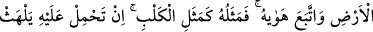

BEL’AM B. BÂÛRÂ KISSASI
175. Onlara (yahudilere), kendisine ayetlerimizden verdiğimiz ve fakat onlardan
sıyrılıp çıkan, o yüzden de şeytanın takibine uğrayan ve sonunda azgınlardan olan
kimsenin haberini oku.
176. Dileseydik elbette onu bu ayetler sayesinde yükseltirdik. Fakat o, dünyaya
saplandı ve hevesinin peşine düştü. Onun durumu tıpkı köpeğin durumuna benzer:
Üstüne varsan da dilini çıkarıp solur, bıraksanda dilini sarkıtıp solur. İşte
ayetlerimizi yalanlayan kavmin durumu böyledir. Kıssayı anlat; belki düşünürler.
177. Âyetlerimizi yalanlayan ve kendilerine zulmetmiş olan kavmin durumu ne
kötüdür!
178. Allah kimi hidayete erdirirse, doğru yolu bulan odur. Kimi de şaşırtırsa, işte
asıl ziyana uğrayanlar onlardır.
Ey Muhammed, “Onlara” yahudilere, kendisine vahdaniyetimizin ve ulûhiyetimizin
delillerini öğrettiğimiz ve anlamasını sağladığımız “şu adamın” mühim “haberini de
oku: Kendisine ayetlerimizi verdik” Buradaki “vermek”, öğretmek anlamındadır.
Bu adamın kim olduğu hususunda farklı görüşler ileri sürülmüştür. Bühtanları
sebebiyle yahudileri azarlama makamına en uygun olanı, el-İrşad’da da belirtildiği gibi
onun İsrâiloğulları’nın âlimlerinden biri olmasıdır. İmam Gazzâlî’nin Minhâcü’l-
abidîn’de belirttiği gibi o, Belam b. Bâûrâ’dır. Bu kimsenin Kenanlı zorbalardan
olduğunun söylenmesi, onların memleketinde yaşaması sebebiyledir. Çünkü kişi,
bilindiği üzere doğduğu yere nisbet edilir.
Kıssaya en uygun olanı, Haddâdî’nin tefsirinde İbn Abbas (r.a.) ve İbn Mes‘ûd
(r.a.)’dan naklettiği şu görüştür: